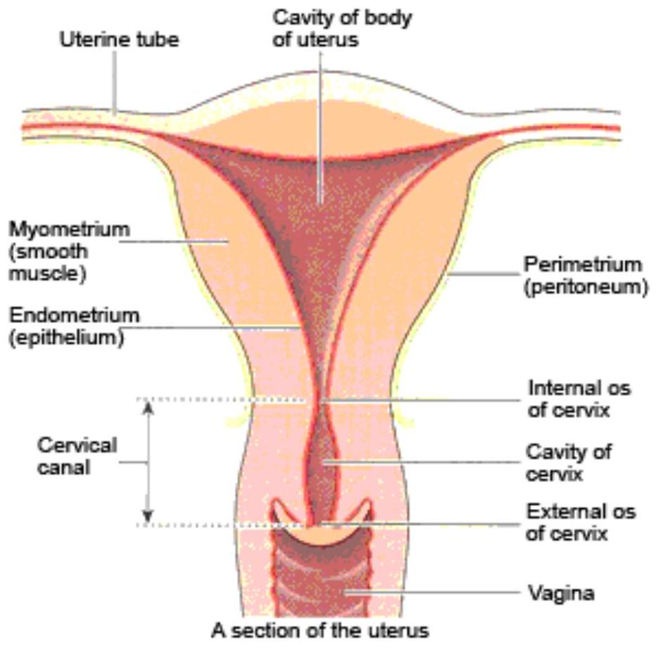

SECTION 2: ABNORMAL UTERINE ACTION
Introduction
Before you begin this section, it is recommended that you review the normal uterine function as you learnt it in the physiology of labour. This section explores abnormalities in uterine action, their causes and management.
Objectives
By the end of this section you will be able to:
- Explain the concept of abnormal uterine action
- Analyse the different types of abnormal uterine action
- Identify causes of various types of abnormal uterine action
- Describe the management of each type of abnormal uterine action
Abnormal Uterine Action
Abnormal uterine action is a dysfunction of uterine muscles due to neuromuscular disharmony. Some types of abnormal uterine action include:
- Hypotonic uterine action
- Incoordinate uterine action, including hypertonic lower uterine segment, constriction ring dystocia, colicky uterus and spurious labour
- Cervical dystocia
- Precipitate labour
You will now explore each of these conditions in more detail.
Hypotonic Uterine Action
This is poor tone in the uterine muscle fibres which results from weak/short contractions. The contractions are infrequent and cause less pain. The uterus may be indented at the height of a contraction. Both mother and baby are affected by the contractions. The effects of weak contractions bring about very slow or no cervical dilatation. This results in prolonged labour.
There are two types of hypotonia; primary and secondary uterine inertia also respectively known as primary and secondary hypotonia. Primary hypotonia starts at the onset of labour. The cause is unknown and it is common in primigravida. Secondary hypotonia occurs when labour has already been established. The uterus is exhausted and contractions slow down, due to:
- Retained second twin
- Cephalopelvic disproportion
- Malpresentation or malposition
- Effect after epidural anaesthesia
Management of Hypotonic Uterine Action
Admit the mother in hospital or transfer to a hospital if she is in a health centre. Reassure her and then sedate her to reduce anxiety and calm her down to sleep. You should perform an abdominal and pelvic exam to exclude cephalopelvic disproportion. Determine the cause of OPP. If this is present she should be prepared for a caesarean section.
If there are no uterine contractions, these should be stimulated by administering an enema or repeat administration if it had been given previously.
You should check on the following factors:
- Frequency, strength and duration of the contractions
- Vital signs, that is, maternal pulse and BP and general condition
- Foetal heart rates
- Descent of the presenting part
A vaginal examination is done every two to four hours to determine cervical dilatation. The urine is tested every two hours for sugar, acetone and albumin. If there is foetal or maternal distress in the first stage of labour, the mother is prepared for caesarean section. However, if the mother is in the second stage or nearing second stage and contracting and dilating well, the delivery can be assisted by vacuum extraction.
The possibility of post partum haemorrhage should be kept in mind. Hence an intramuscular injection of syntometrin 1 ml should be given at the birth of the anterior shoulder or egometrin at the crowning of the head.
Incoordinate Uterine Action
In cases of incoordinate uterine action, there is alteration in the polarity of the uterus with an increase in the resting tone. The uterus is very irritable. The contractions are strong, painful and erratic but in spite of strong contractions, the cervix dilates slowly. Clinically, the patient experiences a lot of pain both before and after contraction. She is exhausted and bears down early due to severe backache. This may lead to retention of urine. Foetal hypoxia occurs due to the hypertonic state of uterus, which interferes with the placental circulation.
On Vaginal Examination (VE) the cervix is noted to dilate slowly despite frequent painful contractions. The cervix is tight, unyielding and oedematous since the mother bears down with each contraction. There are four varieties of Incoordinate uterine action, which will be explored on the next page.
There are four varieties of Incoordinate uterine action described below.
Hypertonic Lower Uterine Segment
In this case, the lower uterine segment is hypertonic. There is loss of polarity and intermittent abdominal pains. The pains occur before and persist long after a uterine contraction. The cervix fails to dilate.
Colicky Uterus
The upper uterine segment contracts strongly and spasmodically. As a result of the different parts of the uterus contracting differently the cervical dilatation is ineffective. There may be reduced placental blood flow leading to foetal distress.
There is intense clump-like pain, contractions are not effective and the uterus is tender. The mother may not experience severe backache.
Constriction Ring Dystocia
This condition happens one in every thousand labours (Myles, 1999). It is a localised spasm of a ring of muscle fibres. This is a result of disorganised uterine action. It is commonly found near the junction of both the upper and lower uterine segment. It usually embraces a narrow part of the neck of the foetus. It may happen at any stage of labour but if it occurs in the third stage, it is known as an hourglass constriction.
The spasm may be triggered by an early rupture of membranes. The hypertonic uterus is irritated by being moulded round the foetus or by interuterine manipulation.
The condition can be diagnosed vaginally when there is a delay in labour. There is no advance of the presenting part and the upper segment feels tender to the touch. Inhalation of amylnitrate or 10 ml of $2\%$ IV magnesium sulphate solution may relieve spasms.
Spurious Labour
Spurious labour is a condition where contractions occur before the onset of labour, which are painful and are accompanied by backache. Giving pethidine or morphine 1 ml to relax the uterine contractions can abolish them. This differentiates it with true labour.
Management of Incoordinate Uterine Action
Cephalopelvic Disproportion (CPD) is usually the underlying cause of this condition. Malpresentation should be ruled out through an abdominal and vaginal examination. If malpresentation is present, the patient should be prepared for a caesarean section.
If CPD is not present, she may be allowed to continue in labour. Close observation is carried out and a record of observations should be maintained.
Reassure the mother to allay anxiety. Make observations of the foetal heart rate, maternal pulse, and respiratory rate half-hourly. Blood pressure should be taken every four hours and urine testing should be done every two hours. Any signs of maternal/foetal distress; dehydration and ketosis, should be reported promptly and may be corrected by giving intravenously (IV) 5% dextrose alternating with normal saline. You should always maintain an intake and output record.
Sedate the mother to relieve pain, calm her down and enable her to sleep. Epidural analgesia is very effective in prompting normal uterine action (or pethidine if added to the drip). A low dose of 0.5 mg syntocinon drip can be given. If, after four to six hours, there is still no progress, the mother should be prepared for a caesarean section. A small proportion of mothers with Incoordinate uterine action may end up in normal delivery or vacuum extraction. The midwife should be able to make the correct judgement call.
Cervical Dystocia
Cervical dystocia can be divided into two classes; primary and secondary.
Primary Cervical Dystocia
In primary cervical dystocia, the uterine contractions are normal. The presenting part is low down in the pelvis but the cervix fails to dilate. The delay is due to the formation of a cartilaginous ring round the cervix.
This condition occurs mainly in primagravida whereby the first stage is prolonged and there is severe and persistent backache. On vaginal examination the cervix feels thin, tight and unyielding.
Secondary Cervical Dystocia
This type occurs due to previous trauma to the cervix, for example, tears which were repaired, scarring or from infection. The cervix fails to dilate in spite of good uterine contractions.
The management of cervical dystocia is by encouraging the mother to lie on her back, elevation of the bed foot to ease pressure on the cervix and care must be taken to avoid lacerations. Caesarean section should be done to hasten delivery of the baby. Cervical dystocia can be further divided into one of three types, any of which can occur as primary or secondary cervical distocia.
Rigid cervix
Rigid cervix is a rare condition in which the cervix fails to dilate despite normal uterine contractions. It is characterised by severe persistent backache. On vaginal examination the cervix feels thin, tight and unyielding.
Annular detachment of the cervix
Annular detachement of the cervix is characterised by persistent and prolonged pressure on the rigid cervix, which causes ischemia. The necrosed ring of the cervix is detached and expelled and contributes to a uterine rupture.
Oedematous anterior lip of cervix
Oedematous anterior lip of the cervix involves the anterior lip being nipped between the foetal head and the pelvic brim. It becomes swollen due to pressure. On vaginal examination the oedematous cervix feels like a firm ridge as thick as a finger. It may also be seen at the vulva as a bluish glistering cervix. It delays the first stage of labour, as the cervix does not dilate quickly.
Precipitate Labour
In the case of precipitate labour, the contractions are strong and frequent from the onset of labour. This results in an abnormally rapid progress of labour and delivery may occur within an hour from the onset of labour.
There are several types of complications, which can occur.
Maternal complications include cervical and perenial lacerations. The uterus may fail to contract during the third stage of labour, leading to a retained placenta. Post partum haemorrhage, uterine inversion, shock and collapse may occur due to sudden relief of pressure.
Foetal complications include foetal hypoxia, which may occur as a result of frequent and strong contractions. Rapid moulding may result in intracranial pressure and, during delivery, this may lead to intracranial haemorrhage. Asphyxia may occur due to rapid expulsion of the baby's unmoulded head.
Over-Stimulation of the Uterus
This may occur as a result of excessive use of syntocinon or prostaglandin, which may cause tetanic contractions with inadequate periods of relaxation.
Complications of over-stimulation of the uterus include foetal hypoxia. If uterine spasms that reduce the transfer from the placenta of foetal oxygen are not treated, foetal death may occur. Other complications include precipitate labour and rupture of uterus in cases of disproportion.
Methods of management should include the following:
- Stop the administration of syntocinon or prostaglandin at once
- In case of tonic contractions, the patient should be given two puffs of ventolin inhaler
- If there is foetal distress, give dextrose IV and oxygen by mask
Tonic Contractions
This is where the contractions are excessively longer, stronger and more frequent. This results in almost continuous contractions with short periods of relaxation. Tonic contractions are caused by cephalopelvic disproportion. The uterus attempts to overcome the obstruction and so it increases its strength and frequency. The condition is common in primigravidae.
Possible complications of tonic contractions include the rupture of the uterus and foetal death due to prolonged labour.
Management of Tonic Contractions
If the patient is on syntocinon drip, it should be discontinued and the doctor informed. The vital signs, including observations of pulse and blood pressure, should be monitored carefully.
There are several factors, which predispose to abnormal uterine action, these include:
- Age, the elderly primigravida is more likely to have abnormal uterine action
- Parity, the condition is more frequent in primigravida
- Cephalopelvic disproportion or malpresentation OPP, which may either cause hypotonic uterine action or incoordinate uterine action
- Post maturity
- Other factors like over distension of the uterus in multiple pregnancy
- Early rupture of membranes
- Emotional tension of the patient